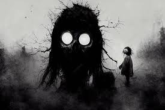

El Eco de la Tristeza
Cuento completo - John Milton A.
Esa noche, como siempre sumergido en mis recuerdos, me acostaba; y en el transcurso de la puerta a mi lecho observé una figura extraña en mi ventana; era una persona encapuchada, quebrada y arañada, de ojos vacíos, negros e intensos con un cuerpo como frágil y gélido, un semblante taciturno y profundo y con una boca cocida que formaba una lúgubre pero melancólica sonrisa y que daba a entender sus horripilantes pensamientos cuyos orígenes era mejor no imaginar. Lo observé durante dos horas mientras "eso" seguía cada uno de mis movimientos con su mirada muerta y opaca, aunque firme, en donde se destellaba, en el rincón más porfundo de ésta, cada ahogado sentimiento e infernal pensamiento.
Así, pues, ya faltando media hora para que los rayos anaranjados y simples del rayar del alba recalaran por entre las plácidas y solitarias nubes de la efímera noche, me decidí por acercarme. Me levanté de mi silla, caminé hacia la ventana escuchando mi respiración y mis latidos, y aquella figura todavía estaba siguiéndome con su sonrisa decorada por aquellos oscuros y olvidados luceros de la tragedia y la desgracia. Al llegar a la ventana le abrí y le pregunté por su nombre como si fuese alguien nuevo que llega a mi vida, como si entendiera algo, al menos la más mínima parte, del dolor reflejado en lo más profundo de las perforaciones desgastadas del hilo de sus labios; un casi invisible cambio se notó en el contorno de su boca y, rasgando con un forzoso movimiento sus pálidos labios, los cuales cayeron como dos hojas secas sobre una triste hojarasca, pronunció las siguientes palabras con una voz firme y compungida:
-- "Es mi nombre sólo el eco de aquella tristeza que consume mi alma y soy, pues, el reflejo del dolor que se oculta tras la máscara de mi de mi falsa y forzada sonrisa."
-- "¿Quién te ha hecho esto?" -- le pregunté.
-- "Quienes llaman raros a unos y fenómenos a otros son los mismos que crean monstruos dentro de los menos esperados y luego piden por una vacuna para aliviar su desahuciada desgracia."
Sin entender aún de qué me estaba hablando o quién trataba de decirme que era, o si sólo el dolor de haber rasgado sus labios le estaba haciendo alucinar, le pregunté quién era, a lo que aquella deprimida y errante silueta respondió cambiando su sonrisa por un largo y funesto puchero:
-- "Los reflejos no tienen nobre y tampoco son alguien, son aquello que las contienen en su interior, pese a que no lo vean."
Estremecido por un repentino mareo, caí en la cama y me di cuenta de que me estaba viendo, durante todo este tiempo, en mi espejo, y descubrí que la ilusión de la ventana sólo era in vistazo que mi agonizante alma echaba a las lumbres de lo que me estaba convirtiendo yo mismo, de lo que me transformaba este desdeñable mundo y, sin embargo, de lo que no reprocho en convertirme; pues más monstruo es aquel mundo que rechaza a sus propias creaciones.
FIN